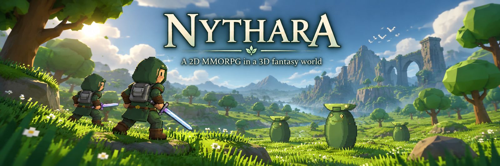

💻 Softwareentwicklung
Von der Idee bis zu funktionierenden, wartbaren Anwendungen und technischen Systemen.
Developer · Linux Enthusiast · Game Developer · Systems & Technology
@Agutroil
Building software, worlds and tools.
Powered by Linux, shaped by curiosity and a little magic. Ich entwickle Software, experimentiere mit Linux und baue eigene Systeme rund um Games, Web, Security, Automatisierung und moderne Entwicklungswerkzeuge.

Hallo! Ich bin Anton Deister – auf GitHub unterwegs als Agutroil.
Ich entwickle Software, experimentiere mit Linux und arbeite an eigenen Projekten rund um Games, Web, Security, Automatisierung und moderne Entwicklungswerkzeuge.
Besonders spannend finde ich Projekte, bei denen aus einer Idee Schritt für Schritt ein funktionierendes, testbares und erweiterbares System entsteht.
Ich möchte Technologien nicht nur benutzen, sondern verstehen, verändern und daraus eigene Systeme bauen.
Von der Idee bis zu funktionierenden, wartbaren Anwendungen und technischen Systemen.
Debian als tägliche Entwicklungsumgebung mit Shell, CLI-Workflows und technischem Systemverständnis.
Gameplay-Systeme, Welten, Multiplayer, Progression und langfristig erweiterbare Spielarchitektur.
Moderne Websites und Webanwendungen mit Fokus auf klare Strukturen, Bedienbarkeit und technische Qualität.
Sicherheit als Bestandteil der Architektur – von Eingabevalidierung bis zu Netzwerk- und Zugriffskontrollen.
Coding Agents und KI-Werkzeuge als kontrollierte Unterstützung innerhalb realer Entwicklungsprozesse.
Wiederkehrende Aufgaben durch Skripte, Pipelines und reproduzierbare Workflows vereinfachen.
Automatisierte Tests, Regression Checks und klare Qualitäts-Gates für verlässliche Änderungen.
Systeme modular planen, Verantwortlichkeiten sauber trennen und Erweiterbarkeit langfristig erhalten.
Eigene Werkzeuge, Bridges und Hilfssysteme entwickeln, die Entwicklungsabläufe schneller und sicherer machen.
Die Technologien, mit denen ich Software, Webanwendungen, Game-Systeme und Entwicklungswerkzeuge aufbaue.
Die vier Bereiche aus meinem Profil – hier als ausführliche Website-Version mit den einzelnen Themen und ihrer Bedeutung.
Ich entwickle Spiele und Game-Systeme mit Fokus auf langfristig erweiterbare Architektur.
Ich beschäftige mich mit modernen Web- und Software-Technologien.
Linux ist meine primäre Entwicklungsumgebung.
Mich interessiert besonders die Verbindung klassischer Softwareentwicklung mit modernen Coding Agents.

Explore · Fight · Progress · Build · Connect
Nythara ist mein größtes aktuelles Game-Development-Projekt. Das Spiel verbindet gerichtete 2D-Charaktere mit einer stilisierten 3D-Fantasywelt und wächst zu einem Online-RPG mit persistenten Charakteren, serverautoritativem Gameplay, Regionen, Dungeons und langfristiger Progression.
Weitere Informationen, aktuelle Entwicklung, Welt, Kreaturen, Dungeons und Datenbank findest du auf der offiziellen Nythara-Webseite.
Nythara-Webseite öffnen →
“Every bug is just
an undocumented spell.”
— Agutroil